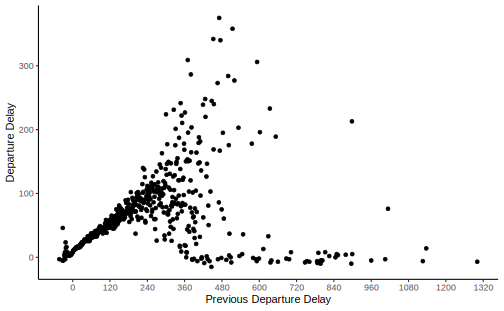
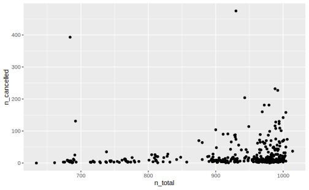
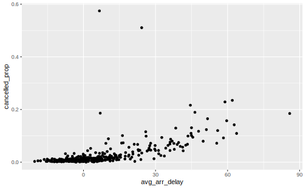

1.6 Exercises
Exercise 1.10 找到每个日期分组中到达时间延迟最长的10条记录
# min_rank自动在分组内排序
not_cancelled %>%
group_by(year,month,day) %>%
filter(rank(desc(arr_delay)) <= 10) %>%
select(month,year,day,arr_delay)
#> # A tibble: 3,609 x 4
#> # Groups: year, month, day [365]
#> month year day arr_delay
#> <int> <int> <int> <dbl>
#> 1 1 2013 1 851
#> 2 1 2013 1 338
#> 3 1 2013 1 263
#> 4 1 2013 1 166
#> 5 1 2013 1 174
#> 6 1 2013 1 222
#> # ... with 3,603 more rows
Exercise 1.11 找出一年中到达航班多于 365 次的目的地：
not_cancelled %>%
count(dest, sort = T) %>%
filter(n > 365)
#> # A tibble: 75 x 2
#> dest n
#> <chr> <int>
#> 1 ATL 16837
#> 2 ORD 16566
#> 3 LAX 16026
#> 4 BOS 15022
#> 5 MCO 13967
#> 6 CLT 13674
#> # ... with 69 more rows
# another solution
not_cancelled %>%
group_by(dest) %>%
filter(n() > 365) %>%
distinct(dest)
#> # A tibble: 75 x 1
#> # Groups: dest [75]
#> dest
#> <chr>
#> 1 IAH
#> 2 MIA
#> 3 BQN
#> 4 ATL
#> 5 ORD
#> 6 FLL
#> # ... with 69 more rows
Exercise 1.12 哪一架飞机(
tailnum)具有最差的准点记录：
衡量一个飞机的准点情况有很多种可能的选择，这里只提供两个方向：
- 该航班未取消且延误（到达和出发）次数占总飞行次数的比例最小
- 该航班的平均到达延误时间最长
从第一个方向出发：
## 查看飞机飞行次数的分布
count_by_tail <- flights %>%
group_by(tailnum) %>%
summarize(n = n())
quantile(count_by_tail$n)
#> 0% 25% 50% 75% 100%
#> 1 23 54 110 2512
flights %>%
filter(!is.na(tailnum)) %>%
mutate(on_time = !is.na(arr_time) & (arr_delay <= 0) & (dep_delay <= 0) ) %>%
group_by(tailnum) %>%
summarize(on_time = mean(on_time), n = n()) %>% ## mean和逻辑值结合计算比例
filter(n > 20) %>% ## 避免因频次过少做出结论,选择20是因为它是飞行次数的下四分位数
filter(min_rank(on_time) == 1) ## 未取消且准点比例最低的飞机
#> # A tibble: 1 x 3
#> tailnum on_time n
#> <chr> <dbl> <int>
#> 1 N988AT 0.0541 37接下来是第二个方向：
flights %>%
group_by(tailnum) %>%
summarize(arr_delay = mean(arr_delay,na.rm = T),n = n()) %>% ##注意这一步的mean中的参数
filter(n > 20) %>%
filter(min_rank(desc(arr_delay)) == 1)
#> # A tibble: 1 x 3
#> tailnum arr_delay n
#> <chr> <dbl> <int>
#> 1 N203FR 59.1 41Exercise 1.13 如果想要尽量避免航班延误，应该在一天中的哪个时间搭乘飞机？
对 hour 分组计算平均到达延误时间：
flights %>%
group_by(hour) %>%
summarize(arr_delay = mean(arr_delay, na.rm = T)) %>%
arrange(arr_delay)
#> # A tibble: 20 x 2
#> hour arr_delay
#> <dbl> <dbl>
#> 1 7 -5.30
#> 2 5 -4.80
#> 3 6 -3.38
#> 4 9 -1.45
#> 5 8 -1.11
#> 6 10 0.954
#> # ... with 14 more rows
Exercise 1.14 计算每个目的地的到达延误总时间的分钟数，以及每条记录到每个目的地的延误时间比例
flights %>%
filter(arr_delay > 0) %>%
group_by(dest) %>%
mutate(
arr_delay_total = sum(arr_delay), ## 经过分组后，求和在组内操作
arr_delay_prop = arr_delay / arr_delay_total
) %>%
select(
dest, tailnum,
arr_delay, arr_delay_prop
) %>%
arrange(dest, desc(arr_delay_prop))
#> # A tibble: 133,004 x 4
#> # Groups: dest [103]
#> dest tailnum arr_delay arr_delay_prop
#> <chr> <chr> <dbl> <dbl>
#> 1 ABQ N784JB 153 0.0341
#> 2 ABQ N659JB 149 0.0332
#> 3 ABQ N640JB 138 0.0308
#> 4 ABQ N589JB 137 0.0305
#> 5 ABQ N556JB 136 0.0303
#> 6 ABQ N598JB 126 0.0281
#> # ... with 132,998 more rows
Exercise 1.15 延误通常是由临时原因造成的：即使最初引起延误的问题已经解决，但因为要让前面的航班先起飞，所以后面的航班也会延误。使用
lag() 探究一架航班延误与前一架航班延误之间的关系。
## This calculates the departure delay of the preceding flight from the same airport.
(lagged_delays <- flights %>%
arrange(origin, month, day, dep_time) %>% ## 这一步排序确保了偏移是有意义的
group_by(origin) %>%
mutate(dep_delay_lag = lag(dep_delay)) %>% ## 偏移函数基于分组
filter(!is.na(dep_delay),!is.na(dep_delay_lag)))
#> # A tibble: 327,649 x 20
#> # Groups: origin [3]
#> year month day dep_time sched_dep_time dep_delay arr_time sched_arr_time
#> <int> <int> <int> <int> <int> <dbl> <int> <int>
#> 1 2013 1 1 554 558 -4 740 728
#> 2 2013 1 1 555 600 -5 913 854
#> 3 2013 1 1 558 600 -2 923 937
#> 4 2013 1 1 559 600 -1 854 902
#> 5 2013 1 1 601 600 1 844 850
#> 6 2013 1 1 606 610 -4 858 910
#> # ... with 327,643 more rows, and 12 more variables: arr_delay <dbl>,
#> # carrier <chr>, flight <int>, tailnum <chr>, origin <chr>, dest <chr>,
#> # air_time <dbl>, distance <dbl>, hour <dbl>, minute <dbl>, time_hour <dttm>,
#> # dep_delay_lag <dbl>
lagged_delays %>%
group_by(dep_delay_lag) %>%
summarise(dep_delay_mean = mean(dep_delay)) %>%
ggplot(aes(y = dep_delay_mean, x = dep_delay_lag)) +
geom_point() +
scale_x_continuous(breaks = seq(0, 1500, by = 120)) +
labs(y = "Departure Delay", x = "Previous Departure Delay") +
theme_classic()
## This plots the relationship between the mean delay of a flight for all values of the previous flight. For delays less than two hours, the relationship between the delay of the preceding flight and the current flight is nearly a line. After that the relationship becomes more variable, as long-delayed flights are interspersed with flights leaving on-time. After about 8-hours, a delayed flight is likely to be followed by a flight leaving on time.
Exercise 1.16 根据到达地点的数量，对航空公司进行排序 ; 找出至少有两个航空公司的目的地
## rank carriers by numer of destinations
flights %>%
group_by(carrier) %>%
summarize(n_dest = n_distinct(dest)) %>%
arrange(desc(n_dest))
#> # A tibble: 16 x 2
#> carrier n_dest
#> <chr> <int>
#> 1 EV 61
#> 2 9E 49
#> 3 UA 47
#> 4 B6 42
#> 5 DL 40
#> 6 MQ 20
#> # ... with 10 more rows
## find all airports with > 1 carrier
flights %>%
group_by(dest) %>%
summarize(n_carriers = n_distinct(carrier)) %>%
filter(n_carriers > 1)
#> # A tibble: 76 x 2
#> dest n_carriers
#> <chr> <int>
#> 1 ATL 7
#> 2 AUS 6
#> 3 AVL 2
#> 4 BDL 2
#> 5 BGR 2
#> 6 BNA 5
#> # ... with 70 more rows
Exercise 1.17 每天取消的航班数量和总航班数量存在什么关系？每天的平均到达延误时间和取消航班的比例有什么关系？
取消的航班定义为is.na(arr_delay) | is.na(dep_delay)
## One pattern in cancelled flights per day is that
## the number of cancelled flights increases with the total number of flights per day.
flights %>%
group_by(year,month,day) %>%
summarize(n_cancelled = sum(is.na(arr_delay) | is.na(dep_delay)),n_total = n()) %>%
ggplot(aes(x = n_total,y = n_cancelled)) + geom_point()
#2
flights %>%
group_by(year,month,day) %>%
summarize(cancelled_prop = mean(is.na(arr_delay) | is.na(dep_delay)),
avg_arr_delay = mean(arr_delay,na.rm = T)) %>%
ggplot() + geom_point(aes(x = avg_arr_delay,y = cancelled_prop))
Exercise 1.18
哪个航空公司的延误情况最严重？你能否分清这是因为糟糕的机场设备，还是航空公司的问题？（考虑一下
flights %>% group_by(carrier,dest) %>% summarize(n())
flights %>%
group_by(carrier) %>%
summarize(avg_arr_delay = mean(arr_delay,na.rm = T)) %>%
arrange(desc(avg_arr_delay))
#> # A tibble: 16 x 2
#> carrier avg_arr_delay
#> <chr> <dbl>
#> 1 F9 21.9
#> 2 FL 20.1
#> 3 EV 15.8
#> 4 YV 15.6
#> 5 OO 11.9
#> 6 MQ 10.8
#> # ... with 10 more rows
## What airline corresponds to the "F9" carrier code?
filter(airlines,carrier == "F9")
#> # A tibble: 1 x 2
#> carrier name
#> <chr> <chr>
#> 1 F9 Frontier Airlines Inc.You can get part of the way to disentangling the effects of airports versus bad carriers by comparing the average delay of each carrier to the average delay of flights within a route (flights from the same origin to the same destination). Comparing delays between carriers and within each route disentangles the effect of carriers and airports. A better analysis would compare the average delay of a carrier’s flights to the average delay of all other carrier’s flights within a route.
flights %>%
filter(!is.na(arr_delay)) %>%
# Total delay by carrier within each origin, dest
group_by(origin, dest, carrier) %>%
summarise(
arr_delay = sum(arr_delay),
flights = n()
) %>%
# Total delay within each origin dest
group_by(origin, dest) %>%
mutate(
arr_delay_total = sum(arr_delay),
flights_total = sum(flights)
) %>%
# average delay of each carrier - average delay of other carriers
ungroup() %>%
mutate(
arr_delay_others = (arr_delay_total - arr_delay) /
(flights_total - flights),
arr_delay_mean = arr_delay / flights,
arr_delay_diff = arr_delay_mean - arr_delay_others
) %>%
# remove NaN values (when there is only one carrier)
filter(is.finite(arr_delay_diff)) %>%
# average over all airports it flies to
group_by(carrier) %>%
summarise(arr_delay_diff = mean(arr_delay_diff)) %>%
arrange(desc(arr_delay_diff))
#> # A tibble: 15 x 2
#> carrier arr_delay_diff
#> <chr> <dbl>
#> 1 OO 27.3
#> 2 F9 17.3
#> 3 EV 11.0
#> 4 B6 6.41
#> 5 FL 2.57
#> 6 VX -0.202
#> # ... with 9 more rows